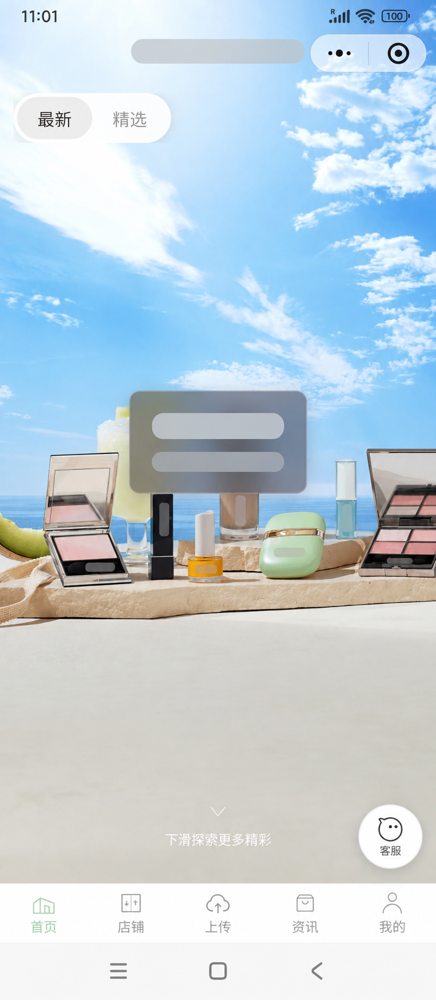
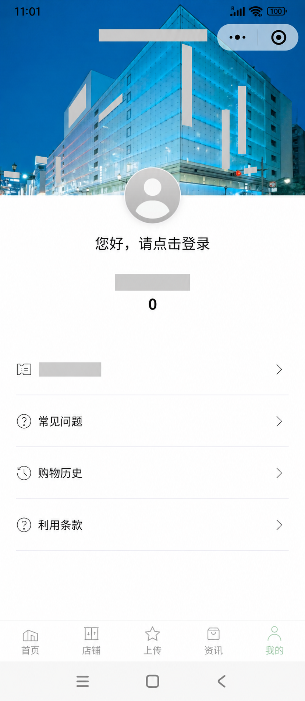
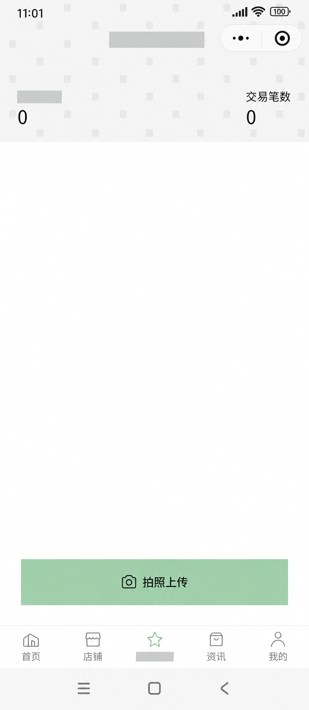

従来の状態
一回限りの店舗取引。取引金額はあっても、顧客別・ブランド別に再利用できる購買シグナルが不足していた。
日本の店舗では、WeChat 利用顧客が購入しても、誰が何を買ったのかを次の接点に活かせないことがある。本件では会員・レシート証憑・特典を結び、実購買に基づく CRM 運用の入口を事業側から設計・推進した。

約1か月の実証期間。Traceable GMV は顧客 ID と紐付けて捕捉した購買額であり、施策による増分売上ではない。
既存の取引情報だけでは、WeChat 利用顧客の ID、購入ブランド、カテゴリ、価格帯、買い合わせを継続的に捉えられない。会員施策、ブランド協業、リピート提案が、推測に留まる構造だった。
一回限りの店舗取引。取引金額はあっても、顧客別・ブランド別に再利用できる購買シグナルが不足していた。
会員 ID と購買証憑を結び、ブランド・カテゴリ・金額・時点を構造化。次の運用判断に使える顧客理解をつくる。
結論は「最も高度な技術」ではなく、「最も早く、実購買データと運用可能性を同時に検証できる入口」を選ぶことだった。
POS・会員基盤の直接連携は将来像として有効だが、複数システム、部門、ベンダーをまたぐ。初期は顧客の自発的な登録を入口とし、データ品質、特典運用、行動変化を小さく検証した。
POS 直接連携は時間と調整コストが大きい。店員の手入力は現場負荷と再現性に課題がある。登録やアンケートだけでは、実際の購買内容を確認できない。
会員 ID、レシート画像、OCR、審査、ポイント、ギフトを一つの運用ループにする。将来の POS・EC 連携を阻害しない、段階的な構成とした。
顧客の操作だけで完結させず、確認・例外処理・特典付与・分析までを一つの業務フローに置いた。
自動化だけを前提にせず、重複・金額異常・読み取り不確実な証憑を扱う確認導線を残した。運用不能な自動化を避けるための設計である。
公開用に識別情報を匿名化した実画面。顧客接点、会員・特典画面、購買証憑のアップロード導線を、同じ運用ループとしてつないだ。



画面内のブランド、固有名称、ロゴ、プログラム名称は公開用に匿名化している。
外部ベンダーによる実装を前提に、事業要件・現場運用・データ品質を一つの全体設計へ統合。顧客導線から例外処理、将来の接続可能性までを主導設計した。
合計金額・税額・明細・日時を、運用上使える精度と例外の追跡可能性で評価した。
機能だけでなく、運用負荷、将来拡張、費用、実装順序を比較してスコープを組み立てた。
画像、OCR 状態、購買時点、金額、明細、ポイント、審査状態、異常フラグを一貫して追える形にした。
事業仮説、顧客価値、運用現場、技術制約を分断せず、一つの実装可能な仕組みへ編み直す。
WeChat 利用者を一つの顧客像として扱わない。国籍、来店目的、ブランド選好、価格帯、買い合わせは多様であり、言語だけでは将来の顧客セグメントを設計できない。
顧客 ID と購買証憑を結ぶことで、購買規模、ブランド構成、カテゴリ、価格帯、買い合わせを、顧客別に理解する入口を作った。
国籍や言語による一律の区分ではなく、実購買の傾向に基づくセグメント、特典設計、ブランド別の顧客理解へ拡張する。これらは次フェーズの構想である。
顧客データの断絶を事業課題として定義し、レシート起点の検証仮説、顧客価値、セグメント設計の方向性を主導した。
構想から要件定義、ベンダー選定・管理、開発調整、テスト、ローンチ、初期キャンペーン、データ検証、次フェーズ構想までを一貫して推進した。
ソフトウェアの実装・保守は外部ベンダーが担う。事業設計、仕様優先順位、受入基準、運用設計、ローンチ判断と成果検証は事業側で保有した。
日本・中国・APAC 市場における EC、CRM、デジタル顧客体験、マーケット実行に関する関連ケースは、GitHub プロフィールで確認できる。
GitHub プロフィールを見る